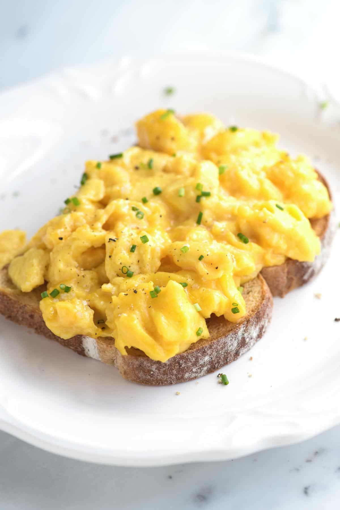

Scrambled Egg

Description
The food that will never get old no matter how many times you've eaten it. For this type of style is easy and quick to make yet completely delicious. I'm drooling just thinking about it now.
Ingredients
- 1/2 tablespoon butter
- 4 large eggs
- 1/8 teaspoon kosher salt, or more to taste
Instructions
- Melt the butter in a medium non-stick pan over medium-low heat.
- Crack eggs into a bowl, add a pinch of salt and whisk until well blended.
- When the butter begins to bubble, pour in the eggs and immediately use a silicone spatula to swirl in small circles around the pan, without stopping, until the eggs look slightly thickened and very small curds begin to form, about 30 seconds.
- Change from making circles to making long sweeps across the pan until you see larger, creamy curds; about 20 seconds.
- When the eggs are softly set and slightly runny in places, remove the pan from the heat and leave for a few seconds to finish cooking. Give a final stir and serve immediately. Serve with an extra sprinkle of salt, a grind of black pepper and a few fresh chopped herbs (if desired).
More Recipes